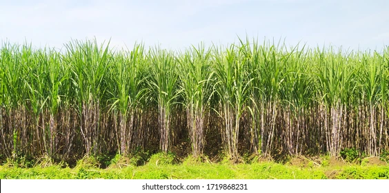

Sugarcane: The Sweet Crop

Uses of Sugarcane
Sugarcane is a highly versatile crop with a variety of uses:
- Sugar Production: The most common use, as sugarcane juice is refined to produce sugar.
- Biofuel: Sugarcane is a source of ethanol, which is used in biofuels.
- Molasses: Byproduct of sugar production, used in food and as animal feed.
- Rum Production: Sugarcane is the base ingredient for producing rum and other spirits.
Types of Sugarcane
Sugarcane varieties are classified based on growth, appearance, and sugar content:
- Common Sugarcane: The most widely grown species used for sugar production.
- Saccharum officinarum: Known for its high sugar content, grown in tropical regions.
- Saccharum spontaneum: Known for its resistance to pests and diseases, grown in harsh conditions.
Growth Requirements for Sugarcane
Sugarcane requires specific conditions for optimal growth:
- Climate: Prefers hot, tropical climates with abundant rainfall.
- Soil: Grows best in well-draining, fertile soils rich in organic matter.
- Water: Requires frequent irrigation, particularly in dry periods.
Natural Fertilizers for Sugarcane
Natural fertilizers help improve sugarcane crop yield:
- Compost: Adds essential nutrients and improves soil texture.
- Green Manure: Aids in replenishing soil nitrogen levels.
- Bone Meal: A good source of phosphorus, supporting root growth and sugar production.
Pest and Disease Prevention
Common pests and diseases that affect sugarcane and how to manage them:
- Sugarcane Borer: A major pest, controlled by crop rotation and timely pesticide use.
- Leaf Spot Disease: Prevented by proper spacing between plants and maintaining good field hygiene.
- Red Rot: A fungal disease, prevented by resistant varieties and crop rotation.
Benefits of Sugarcane
- High Yield: Sugarcane is a high-yielding crop, providing substantial returns for farmers.
- Economic Importance: It plays a vital role in the economies of many tropical and subtropical countries.
- Renewable Resource: Sugarcane is a renewable resource, contributing to sustainable agricultural practices.
Frequently Asked Questions
1. How long does it take for sugarcane to grow?
It typically takes 12 to 18 months for sugarcane to reach maturity, depending on environmental conditions and variety.
2. Can sugarcane be grown in non-tropical regions?
Sugarcane is primarily grown in tropical and subtropical regions, but with proper irrigation and temperature control, it can be grown in certain temperate regions as well.
Back to Crop List